Professional Journey & Growth
I am a first-year Web Development student at St. Clair College. This portfolio documents my progression from learning basic HTML syntax to implementing responsive layouts, interactive elements, and advanced CSS styling techniques. Each project represents a specific milestone in my technical development.
Core Competencies
Project Gallery
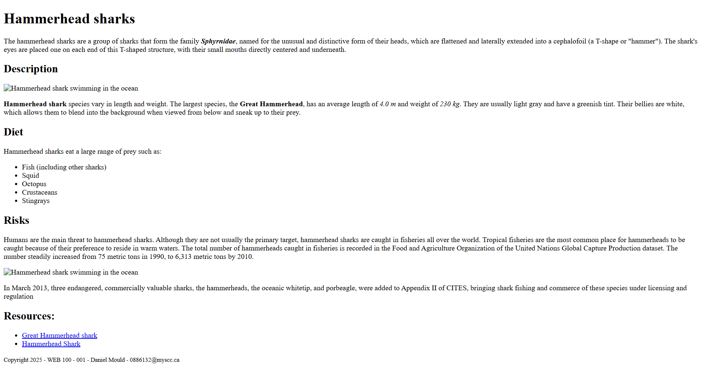
01: Fundamental Structure
A deep dive into document hierarchy using semantic HTML5 tags and lists to organize content without external styling.
View Project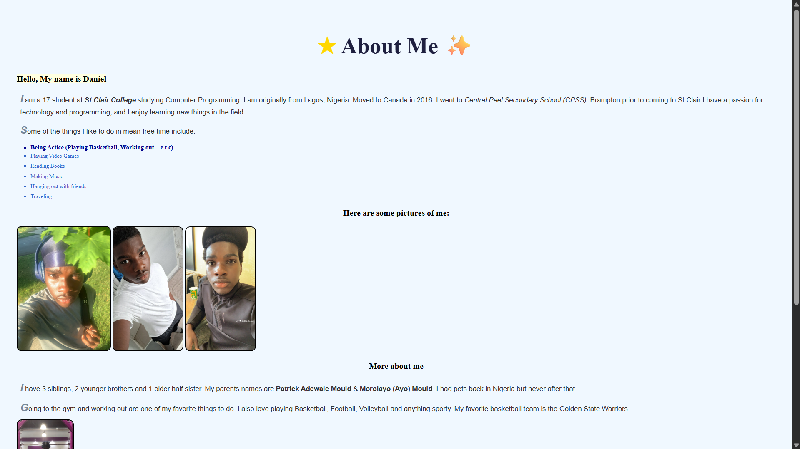
02: Box Model Intro
Implementation of the CSS box model, focusing on borders, padding, and background color manipulation for visual structure.
View Project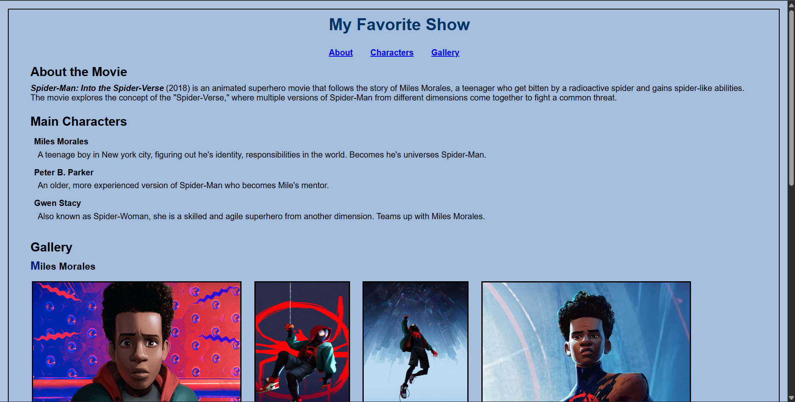
03: Targeted Styling
Utilizing advanced CSS selectors to create a multi-section layout with specialized font treatments and color schemes.
View Project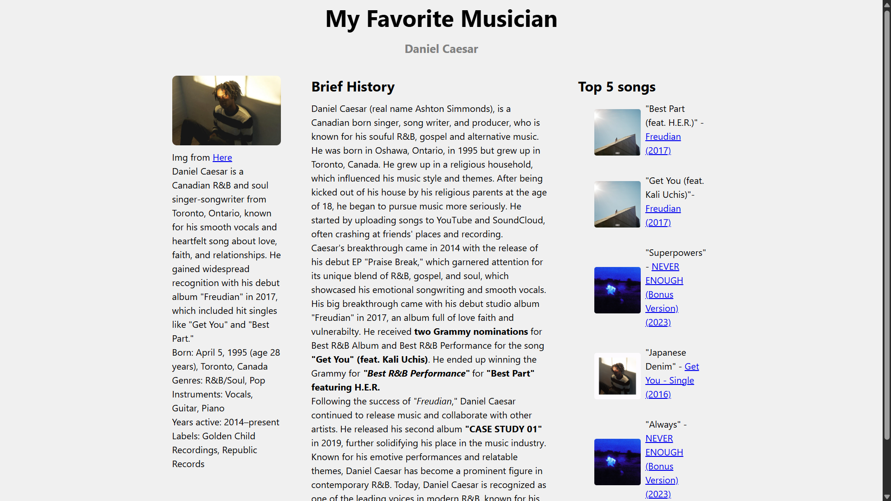
04: Columnar Layouts
Practicing multi-column design and semantic sectioning to build an organized fan-page layout for a musical artist.
View Project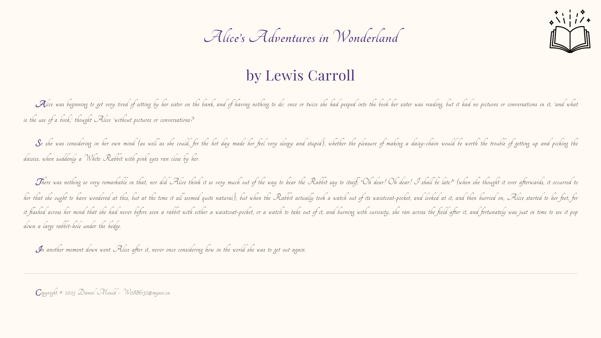
05: Digital Typography
Focused on web-safe fonts and precise image positioning within a flow of text to improve readability and aesthetic.
View Project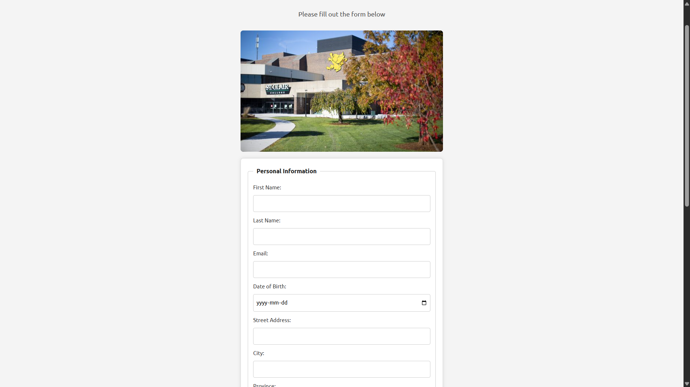
06: Functional Web Forms
Building interactive user inputs and drop-downs to collect data, specifically focused on academic scheduling.
View Project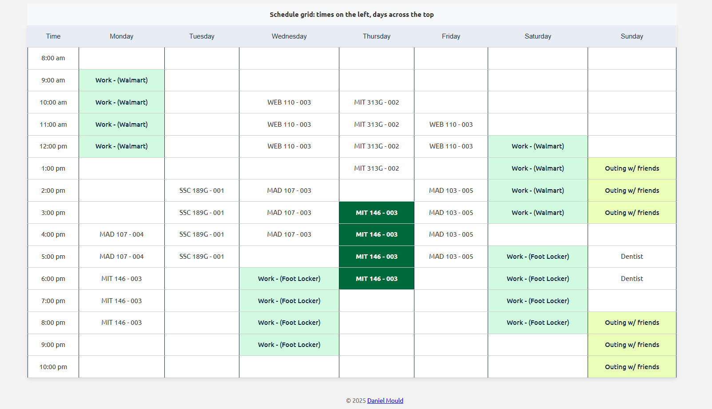
07: HTML Data Tables
Using complex table structures to present a professional semester schedule, ensuring data is organized and easy to scan.
View Project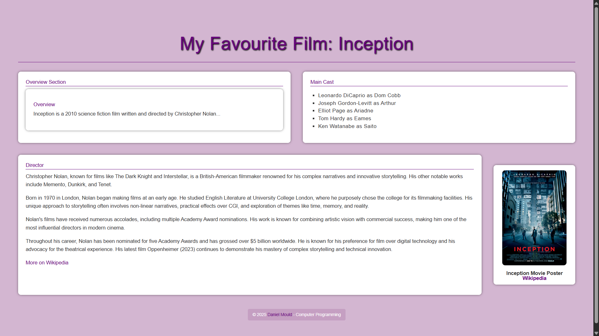
08: Creative Content Sections
Applying advanced CSS to create specific shapes and precise sectioning for a feature article on cinematography.
View Project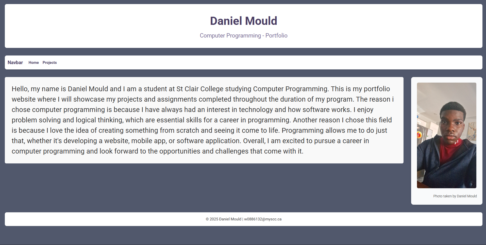
09: Global Navigation
Implementing a sitewide Navbar and mastering the use of columns to build a multi-page personal portfolio skeleton.
View Project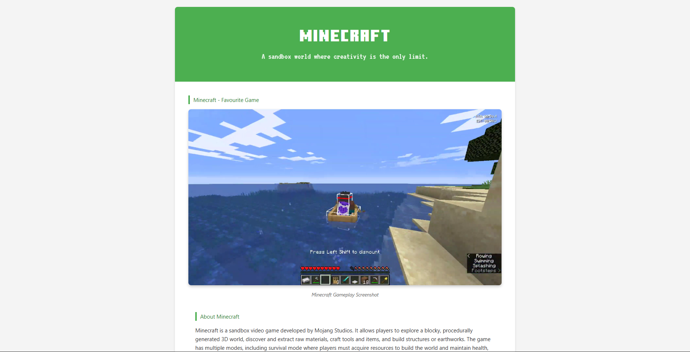
10: CSS Interactivity
Adding dynamic user feedback through hover effects and image transitions to create a more engaging experience.
View Project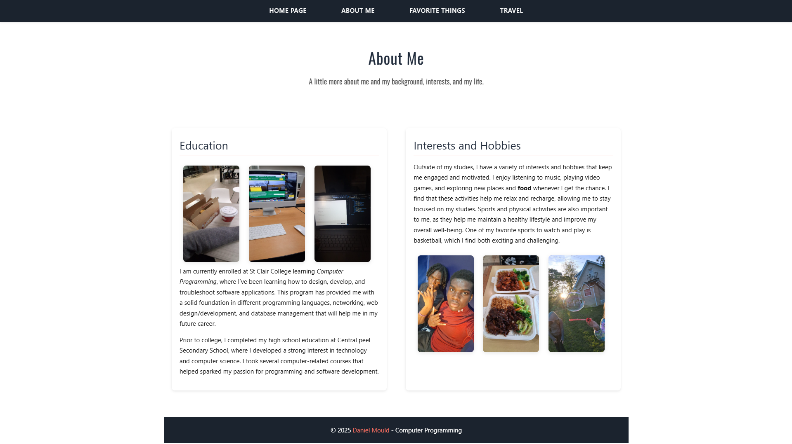
11: Midterm Synthesis
The culmination of early semester skills: combining forms, navbars, and complex styling into a unified personal brand.
View Project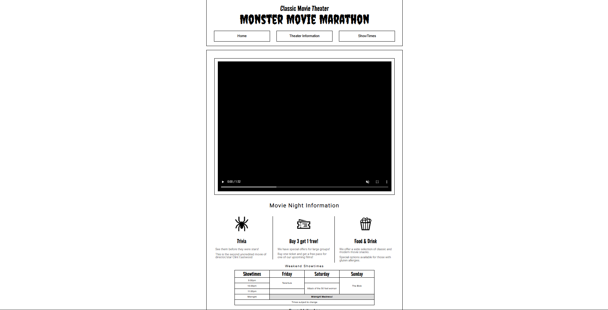
12: Technical Replication
A rigorous final project focused on pixel-perfect replication, advanced CSS animations, and high-fidelity layouts.
View Project